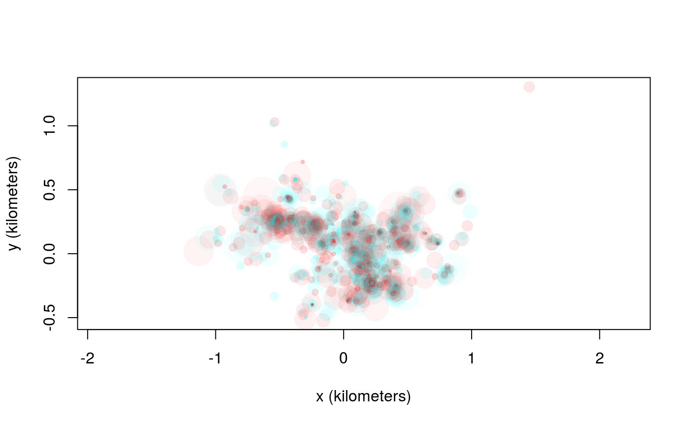
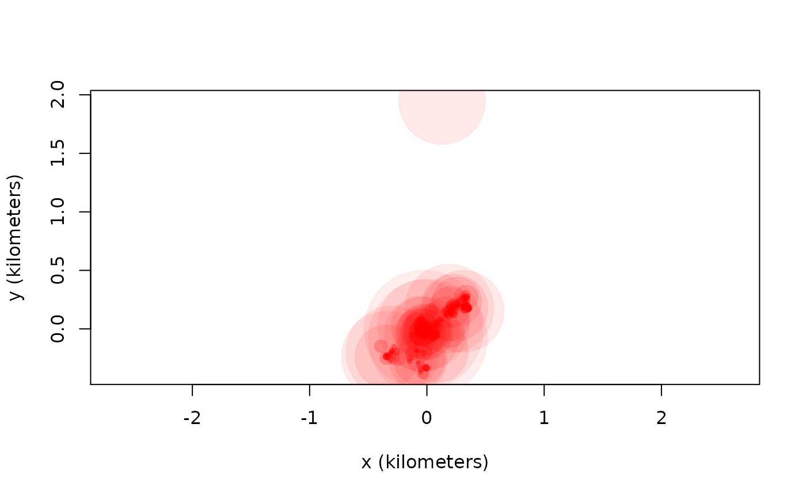
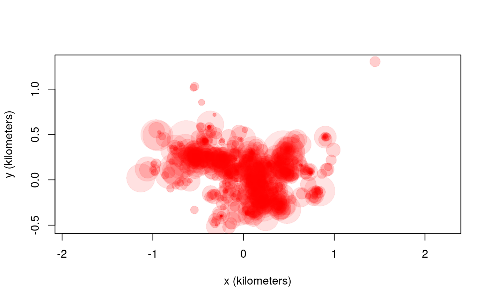
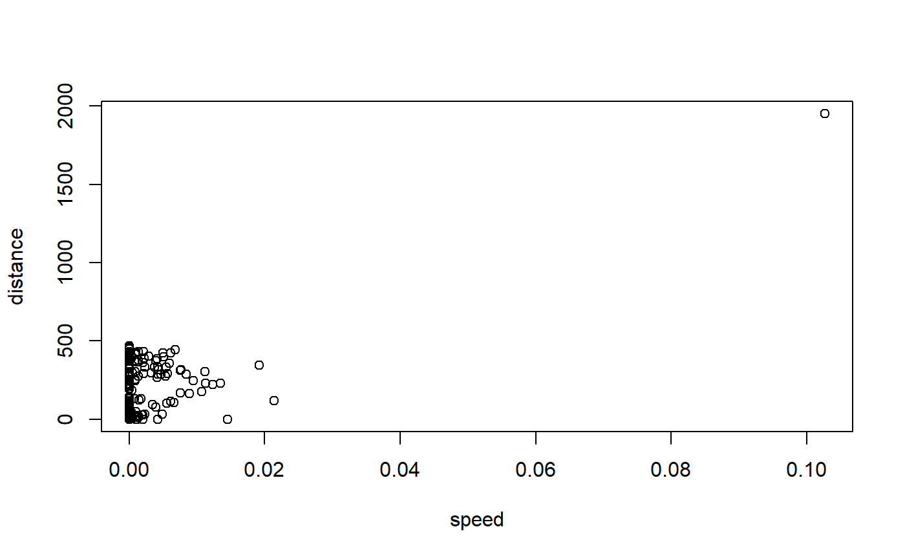
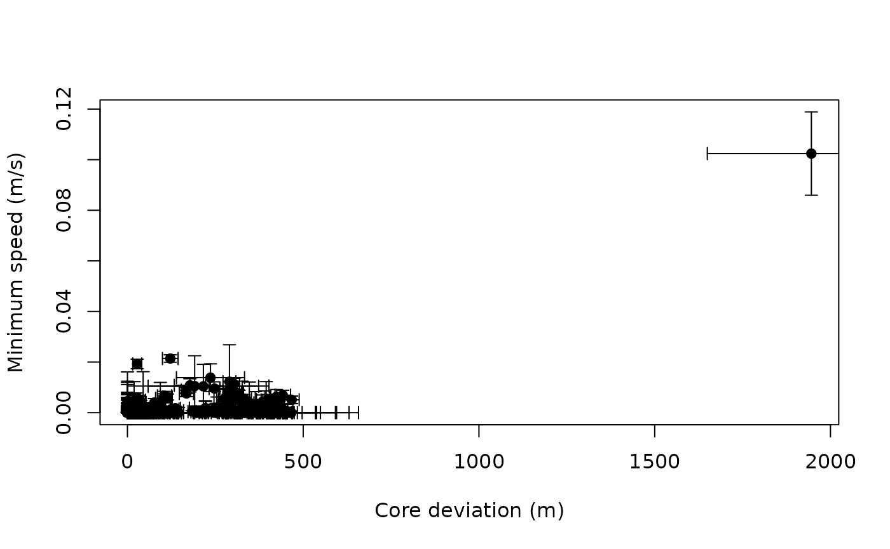
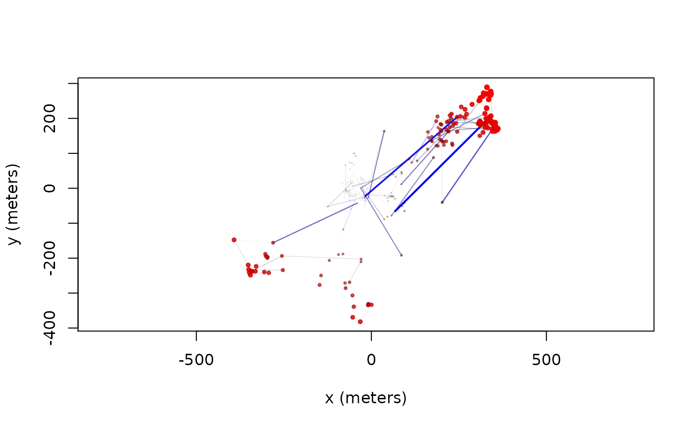
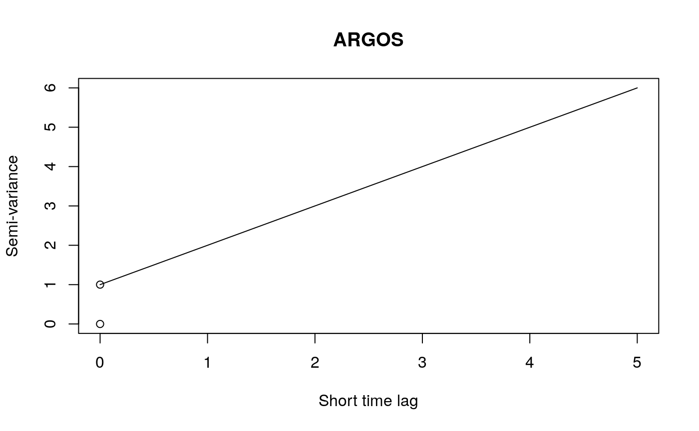
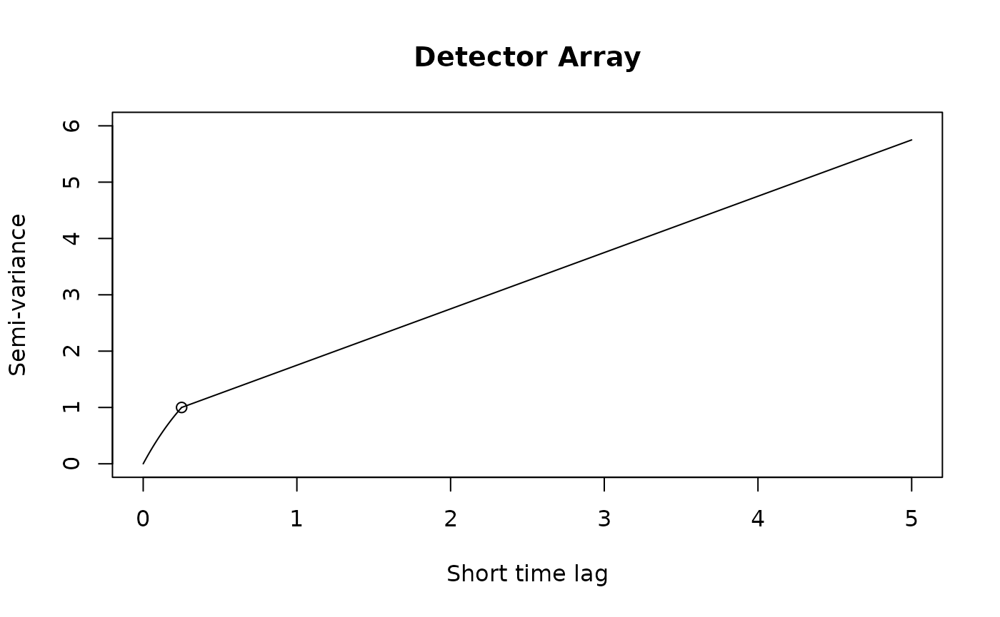

The first step to handling errors is to quantify them. Make sure that your data’s “dilution of precision” (DOP) and error columns import correctly into ctmm. In the following wood turtle dataset, we have some calibration data and a turtle track. Note that the calibration data must be collected from the same model device as the tracking data, and their data formatting bust be similar enough that the same location classes are detected by as.telemetry.
library(ctmm)
data(turtle)
names(turtle[[1]]) # data are not yet calibrated, but HDOP and location class is present## [1] "t" "HDOP" "class" "x" "y"names(turtle) # two calibration datasets and two turtle datasets## [1] "60s" "90s" "F231" "F403"
The uere command is used to estimate the RMS UERE parameter(s) from calibration data. Do not use this command on animal tracking data.
## , , horizontal
##
## low est high
## 2D 22.786528 29.598802 36.397467
## 3D 6.477391 6.946024 7.414237For GPS data, the RMS UERE will typically be 10-15 meters. Here we have two location classes, “2D” and “3D”, which for this device have substantially different RMS UERE values. The UERE parameters can then be assigned to a dataset with the uere()<- command.
## [1] "t" "HDOP" "class" "x" "y" "VAR.xy"plot(turtle[[3]],error=2) # turtle plot with 95% error discs
If you have ARGOS data, they will import with calibration already applied to the horizontal dimensions, but not the vertical dimension.
## [1] "gps" "argos"names(pelican$argos) # error ellipse information (COV and VAR) already present## [1] "timestamp" "longitude" "latitude" "t" "COV.angle"
## [6] "HDOP" "COV.major" "COV.minor" "VAR.xy" "class"
## [11] "z" "VDOP" "x" "y" "COV.x.x"
## [16] "COV.x.y" "COV.y.y"plot(pelican$argos) # pelican ARGOS plot with 95% error ellipses
Not all GPS devices provide reliable DOP values and sometimes it is not obvious what error information will prove to be the most predictive. Generally speaking, as.telemetry will attempt to import the “best” column from among those that estimate error, DOP value, number of satellites and fix type, inlcuding timed-out fixes (see the timeout argument in help(as.telemetry)). Researchers may want to import their data with different error information, run uere.fit for each error model, and then select among the candidate models. Here we do this by comparing the turtle calibration data with and without HDOP values.
First, we consider whether or not the HDOP and location class information are informative.
t.noHDOP <- lapply(turtle,function(t){ t$HDOP <- NULL; t })
t.noclass <- lapply(turtle,function(t){ t$class <- NULL; t })
t.nothing <- lapply(turtle,function(t){ t$HDOP <- NULL; t$class <- NULL; t })In other cases, manipulation will need to be performed before importing, so that as.telemetry can format the telemetry object properly. Running uere.fit now results in errors calibrated under the assumption of homoskedastic errors.
UERE.noHDOP <- uere.fit(t.noHDOP[1:2])
UERE.noclass <- uere.fit(t.noclass[1:2])
UERE.nothing <- uere.fit(t.nothing[1:2])We can now apply model selection to the UERE model fits by summarizing them in a list.
## ΔAICc Z[red]²
## HDOP.class 0.0000 2.366617
## HDOP 286.5747 3.908826
## class 418.5174 3.696585
## homoskedastic 637.2580 4.681067We can see that the combination of location class and HDOP values yield the best error model, both in terms of AICc and in terms of reduced Z squared. Reduced Z squared is a goodness-of-fit statistic akin to reduced chi squared, but designed for comparing error models.
We had two calibration datasets, so we can also see if there is any substantial difference between the two GPS tags. We do this by making a list of individual UERE objects to compare to the previous joint UERE model.
## ΔAICc Z[red]²
## joint 0.000000 2.366617
## individual 3.314758 2.367412In this case, performance of the individualized and joint error models are comparable, and AICc selects the joint model.
Now we come to the task of identifying outliers. The outlie function uses error information to estimate straight-line speeds between sampled times and distances from the bulk of the data.
outlie(turtle[[3]]) -> OUT
High-speed segments are colored in blue, while distant locations are colored in red. More emphasis is placed on the more extreme locations in the outlie plot. Visually we can see at least one outlier in the wood turtle data. The output of outlie also contains the error-informed speed and distance estimates (in SI units) used to generate the plot.
plot(OUT)
A sustained speed of 0.1 m/s is not biologically implausible for a wood turtle, but this location is highly suspicious, both in terms of speed and lack of proximity. After removing the outlier, we can check the data again.

Datasets may have multiple outliers. In pathological situations, there may be no clear separation between the normative data and the outliers. This necessitates a better error model, either by improving inadequate (or absent) HDOP estimates or by employing a heavier tailed error distribution (not yet supported).
If we were working with ARGOS data or high resolution GPS data on a small animal, then we can get a “nugget” effect in the variogram that looks like an initial discontinuity at short time lags.

The height of this initial discontinuity corresponds to the variance of uncorrelated location errors. The second plot is the kind of initial discontinuity one has with detector array data. The end of the (slope) discontinuity is highlighted with a circle. This discontinuity is smooth because the movement and detection are correlated. The height of this initial discontinuity is also (at least roughly) the variance of the location errors.
Because of some convenient mathematical relations, fitting with telemetry errors involves numerically fitting 1-4 more parameters and is, therefore, slower and less reliable at converging on the MLE than fitting without telemetry error. Therefore, by default, telemetry error is not turned on in ctmm models (error=FALSE). Furthermore, in cases with an error model, ctmm.select() is safer to use than direct applicaiton of ctmm.fit(), because ctmm.select() will start with the simplest “compatible” model and then consider further model features that require numerical optimization in stepwise fashion.
For calibrated errors, we have to set error=TRUE in the model guess to fit with telemetry error accounted for.
# automated guestimate for calibrated data
GUESS <- ctmm.guess(turtle[[3]],CTMM=ctmm(error=TRUE),interactive=FALSE)
# stepwise fitting # CRAN policy limits us to 2 cores
FIT <- ctmm.select(turtle[[3]],GUESS,trace=TRUE,cores=2)## * Fitting model OUF isotropic error.## * Fitting models OUF anisotropic error.## * Fitting models OU anisotropic error, OUf anisotropic error.## * Fitting models IID anisotropic error, OU isotropic error.summary(FIT)## $name
## [1] "OU anisotropic error"
##
## $DOF
## mean area speed
## 14.0105 24.1515 0.0000
##
## $CI
## low est high
## area (hectares) 13.67270 21.306461 30.606332
## τ[position] (days) 3.29453 5.636969 9.644904trace=TRUE allows us to see the models considered. verbose=TRUE would save each model.
Fitting with unknown errors is a method of last resort. We have to provide an initial guess for error, which will be the device’s RMS UERE. error=10 is usually a good guess for GPS data (other than e-obs). Unlike uere.fit, ctmm.fit is not yet coded to use the location classes, as simultaneous fitting is a method of last resort that becomes increasingly dangerous with more location classes.
# delete UERE information
uere(turtle) <- NULL
# toss out 2D locations for this example, as we know they have a different/larger RMS UERE
turtle <- lapply(turtle,function(t){ t[t$class=="3D",] })The only difference is that you have to provide an initial guess for the RMS UERE. Otherwise, the steps are the same.
# automated guestimate for uncalibrated data (with 10 meter RMS UERE guess)
GUESS <- ctmm.guess(turtle[[3]],CTMM=ctmm(error=10),interactive=FALSE)
# fit and select models
FIT <- ctmm.select(turtle[[3]],GUESS,trace=TRUE,cores=2)## * Fitting model OUF isotropic error.## * Fitting models OUF anisotropic error.## * Fitting models OU anisotropic error, OUf anisotropic error.## * Fitting models IID anisotropic error, OU isotropic error.summary(FIT)## $name
## [1] "OU anisotropic error"
##
## $DOF
## mean area speed
## 12.83005 21.87087 0.00000
##
## $CI
## low est high
## area (hectares) 13.020972 20.809251 30.39386
## τ[position] (days) 3.416684 6.198587 11.24555
## error (meters) 6.967388 8.784082 10.59714Here, fitting the RMS UERE simultaneously with the movement model produced a consistent result. This will not always be the case.
An alternative method of last resort is to simply assign a plausible RMS UERE value to the data. Again, 10-meter error is usually a good guess for GPS data (other than e-obs).
# assign 10 meter RMS UERE (2D class still deleted)
uere(turtle) <- 10
# automated guestimate for calibrated data
GUESS <- ctmm.guess(turtle[[3]],CTMM=ctmm(error=TRUE),interactive=FALSE)
# stepwise fitting # CRAN policy limits us to 2 cores
FIT <- ctmm.select(turtle[[3]],GUESS,trace=TRUE,cores=2)## * Fitting model OUF isotropic error.## * Fitting models OUF anisotropic error.## * Fitting models OU anisotropic error, OUf anisotropic error.## * Fitting models IID anisotropic error, OU isotropic error.summary(FIT)## $name
## [1] "OU anisotropic error"
##
## $DOF
## mean area speed
## 12.06150 20.48958 0.00000
##
## $CI
## low est high
## area (hectares) 12.638975 20.554422 30.36338
## τ[position] (days) 3.629414 6.628392 12.10542Some sensitivity analysis would be warranted here for the UERE parameter.